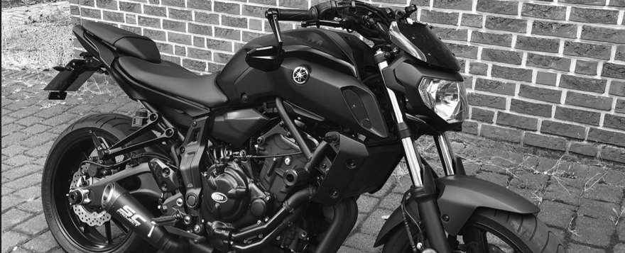

Confira nossos últimos veículos vendidos!
Confira abaixo os últimos veículos que a Black Motos Baixada vendeu. Conquiste o seu sonho também!
Vendido

SCOOTER • USADO • 2021/2021
YAMAHA XMAX 250 ABS 2021
Vendido
SCOOTER • USADO • 2022/2022
YAMAHA XMAX 250 ABS 2022
Vendido
NAKED • USADO • 2021/2021